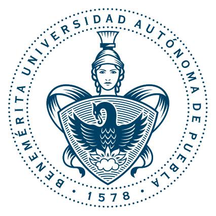

Academicos
Sector Ingeniería
TITULAR
Elsa Chavira Martínez

SUPLENTE
José Italo Cortez
Sector Matemáticas
TITULAR
Pedro García Juárez
SUPLENTE
Carlos Zamora Lima
Sector Licenciatura
PROPIETARIO
Rafael Lemuz López
SUPLENTE
Meliza Contreras González
Sector Programación
TITULAR
José Andrés Vázquez Flores
SUPLENTE
Marco Antonio Soriano Ulloa
Sector Ingenieria en Tecnologías de la Información
TITULAR
María de Lourdes Sandoval Solís
SUPLENTE
Carlos Armando Ríos Acevedo
Sector de Posgrado
TITULAR
David Eduardo Pinto Avendaño
SUPLENTE
Claudia Zepeda Cortés
Alumnos
Sector Básico Licenciatura
TITULAR
Jesús López Batallar
SUPLENTE
Alejandro Soler Díaz
Sector Formativo Licenciatura
TITULAR
Luis Ángel González Valdes
SUPLENTE
Estefania González Torres
Sector Básico Ingeniería
TITULAR
Jensen Eluard Baronville Lezama
SUPLENTE
Pilar Merino Rosas
Sector Formativo Ingeniería
TITULAR
Adriana González Morales
SUPLENTE
Ismael Tlapaya Tepech
Sector Básico Ingeniería en Tecnologías de la Información
TITULAR
Victor Leopolodo Muñoz Flores
SUPLENTE
Lady Yedida Méndez Trejo
Sector de Posgrado
TITULAR
Osvaldo Escobar Díaz
SUPLENTE
María Cristina Aguilar Castellanos
No Academicos
Sector Trabajadores No academicos
TITULAR
María Prisciliana Josefina Hernández Cano
SUPLENTE
María Herminia Castillo Aviles